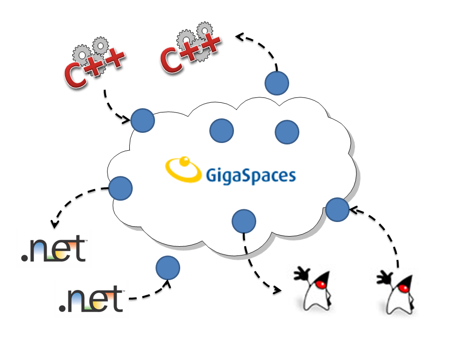

Section Summary: The possibility for organizations whose projects include a combination of Java, .NET and C++ platforms to communicate and access each other easily and efficiently while also maintaining the benefits of the GigaSpaces scale-out application server.
Overview
GigaSpaces introduces interoperability – the possibility for organizations whose projects include a combination of Java, .NET and C++ platforms to communicate and access each other easily and efficiently, while also maintaining the benefits of the GigaSpaces scale-out application server:
- Transparency: using your native API in the space transparently with minimum changes to existing assets. Objects are stored in the space in the same manner regardless of the platform they are written from. For example, an object can be written to the space from a Java feeder, processed using a C++ Processing Unit, and a .NET client can receive the notification.
- Performance: communication between platforms is performed through the space directly, without the need for adapters or XML translation.
- SOA: all applications communicate using the space, allowing each of them to exist as as a loosely-coupled service.

To work with GigaSpaces interoperability, classes from the different platforms should meet the following criteria:
- The classes should have the same fully qualified name (i.e. including package/namespace).
- The classes should have the same hierarchy (i.e. same base/superclass structure).
- The classes should have the same properties with the same names and matching types.
There are two methodologies for developing interoperable solutions:
- Writing the class code in each relevant platform by yourself (See the Writing Interoperable Class tab below)
- Writing an XML file that describes the Entry, and use the code generation tool in the C++ component to generate classes for all platforms (see the Code Generator tab below)
There are pros and cons for each alternative. Here are some points to help you decide which methodology is best for you:
- If you need a C++ version of the class, you have to write the gs.xml file to generate the C++ code.
- If you're getting started with interoperability, you can use the code generator as a learning tool to review interoperable classes in all platforms.
- The code generation tool does not support some of the advanced features in .NET. If you have a need for these features, it is recommended to use the generator to get started, and manually edit the generated code. In this case you need to be careful when changing the class, since regenerating the code might override your manual changes.
Writing Interoperable Classes
Section Summary: This page is focused on designing interoperable classes manually, and some related advanced features.
 For more information about the code generation tool, see the gs.xml Code Generator.
For more information about the code generation tool, see the gs.xml Code Generator.
The .NET-Java example demonstrates many .NET-Java interoperability features. For more details, see GigaSpaces Starter Examples; .NET; DotNetJava ***
Designing Interoperable Classes
| C# | Java |
|---|---|
Using GigaSpaces.Core.Metadata;
namespace MyCompany.MyProject.Entities
{
[SpaceClass(AliasName="com.mycompany.myproject.entities.Person")]
public class Person
{
private string _name;
[SpaceProperty(AliasName="name")]
public string Name
{
get { return this._name; }
set { this._name = value; }
}
}
}
|
package com.mycompany.myproject.entities; public class Person { private String name; public String getName() { return this.name; } public void setName(String name) { this.name = name; } } |
Guidelines and Restrictions
The following guidelines and restrictions should be followed in order to enable platform interoperability:
- The full class name (including package\namespace) in all platforms should be identical.
 Since java packages use a different naming convention than .Net namespaces, it is recommended to use the SpaceClass(AliasName="") feature to map a .Net class to the respective java class.
Since java packages use a different naming convention than .Net namespaces, it is recommended to use the SpaceClass(AliasName="") feature to map a .Net class to the respective java class.
- The properties/fields stored in the space in all platforms should be identical.
 In Java, only properties are serialized into the space. In .NET, both fields and properties are serialized, so you can mix and match them.
In Java, only properties are serialized into the space. In .NET, both fields and properties are serialized, so you can mix and match them.
Since java properties start with a lowercase letter, whereas .Net properties usually start with an uppercase letter, it is recommended to use the SpaceProperty(AliasName="") feature to map a property/field name from .Net to java.
- Only the types listed in the table below are supported. If one of your fields uses a different type, you can use the class only in a homogeneous environment.
Arrays of these types are supported as well.
You can also use .NET enumerations, which are treated as their underlying .NET type. Java enums are not supported.
If your class contains a field whose type is not in the table, you can use SpaceExclude to exclude it from the space.
Some of the types have different charactaristics in .NET and Java (signed\unsigned, nullable\not nullable, precision, etc.) This can lead to runtime exceptions (e.g. trying to store null in a .NET structure) or unexpected results (e.g. copying values between signed and unsigned fields).
Supported Types for Matching and Interoperability
The following types are supported by the space for matching and interoperability:
| CLS | C# | VB.Net | Java | Description |
|---|---|---|---|---|
| System.Byte | byte | Byte | byte | 8-bit integer.1 |
| Nullable<Byte> | byte? | Nullable(Of Byte) | java.lang.Byte | Nullable wrapper for byte.1 |
| System.Int16 | short | Short | short | 16-bit integer. |
| Nullable<Int16> | short? | Nullable(Of Short) | java.lang.Short | Nullable wrapper for short. |
| System.Int32 | int | Integer | int | 32-bit integer. |
| Nullable<Int32> | int? | Nullable(Of Integer) | java.lang.Integer | Nullable wrapper for int. |
| System.Int64 | long | Long | long | 64-bit integer. |
| Nullable<Int64> | long? | Nullable(Of Long) | java.lang.Long | Nullable wrapper for long. |
| System.Single | float | Single | float | Single-precision floating-point number (32 bits). |
| Nullable<Single> | float? | Nullable(Of Single) | java.lang.Float | Nullable wrapper for float. |
| System.Double | double | Double | double | Double-precision floating-point number (64 bits). |
| Nullable<Double> | double? | Nullable(Of Double) | java.lang.Double | Nullable wrapper for double. |
| System.Boolean | bool | Boolean | boolean | Boolean value (true/false). |
| Nullable<Boolean> | bool? | Nullable(Of Boolean) | java.lang.Boolean | Nullable wrapper for boolean. |
| System.Char | char | Char | char | A Unicode character (16 bits). |
| Nullable<Char> | char? | Nullable(Of Char) | java.lang.Character | Nullable wrapper for char. |
| System.String | string | String | java.lang.String | An immutable, fixed-length string of Unicode characters. |
| System.DateTime Nullable<DateTime> |
DateTime DateTime? |
DateTime Nullable(Of DateTime) |
java.util.Date | An instant in time, typically expressed as a date and time of day.2,3 |
| System.Decimal Nullable<Decimal> |
decimal decimal? |
Decimal Nullable(Of Decimal) |
java.math.BigDecimal | A decimal number, used for high-precision calculations.2,4 |
| System.Guid Nullable<Guid> |
Guid Guid? |
Guid Nullable(Of Guid) |
java.util.UUID | A 128-bit integer representing a unique identifier.2 |
| System.Object | object | Object | java.lang.Object | Any object |
- In .Net a byte is unsigned, whereas in java a byte is signed.
- These types can be either nullable or not nullable in .Net, whereas in java they are always nullable.
- In .Net a DateTime is measured in ticks (=100 nanoseconds) since 1/1/0001, whereas in java a Date is a measured in milliseconds since 1/1/1970.
- The types Decimal (.Net) and BigDecimal (java) have different precision and range (see .Net and java documentation for more details). In addition, be aware that serialization/deserialization of these types is relatively slow, compared to other numeric types. As a rule of thumb these types should not be used, unless the other numeric types presicion/range is not satisfactory.
Arrays and Collections support
The following collections are mapped for interoperability:
| .Net | Java | Description |
|---|---|---|
| T[] | E[] | Fixed-size arrays of elements. |
| System.Collections.Generic.List<T> System.Collections.ArrayList System.Collections.Specialized.StringCollection |
java.util.ArrayList | Ordered list of elements. |
| System.Collections.Generic.Dictionary<K,V> System.Collections.HashTable System.Collections.Specialized.HybridDictionary System.Collections.Specialized.ListDictionary |
java.util.HashMap | Collection of key-value pairs. |
| System.Collections.Generic.SortedDictionary<K,V> System.Collections.Specialized.OrderedDictionary |
java.util.LinkedHashMap | Ordered collection of key-value pairs. |
| System.Collections.Specialized.NameValueCollection System.Collections.Specialized.StringDictionary |
java.util.Properties | Collection of key-value string pairs.1 |
- In java, the Properties type allows the user to store keys and values which are not strings.
***Link required
Code Generator
The *gs.xml file and the gsxml2cpp utility allow you to use your C++ classes in the space without a need for mapping or special knowledge regarding other APIs. This file is in charge of generating the C++ class serialization code, allowing you to use your C++ classes in the space. It can also be used to generate the C++ class header file and POJO Java file.
To define your classes in the space using the .gs.xml file, perform the following steps:
- Write a *gs.xml file, defining its XML elements as desired.
- Run the gsxml2cpp command – this command generates the serializer code, which includes the classes defined in your gs.xml file.
- Compile the serializer code – this is done using the gsxml2cpp command cpp output parameter. For an example of how to do this, refer to the C++ Hello World Example.
- Compiling the serializer code generates a DLL file in the format of: serialize.dll. Copy the DLL file to the <GigaSpaces Root>\lib\serviceGrid\native directory.
You can now use your C++ classes inside the space.
For an explanation of the different gs.xml elements, refer to the CPP API Mapping File section.
To find out about the supported C++ types, refer to the Supported Types section.
For an explanation of the gsxml2cpp command and how to use it, refer to the gsxml2cpp Utility section.